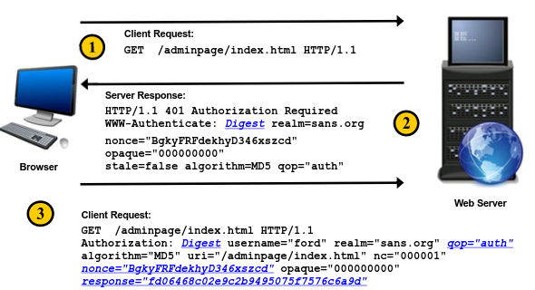

Digest Authentication
Digest mode authentication is an update to Basic mode. It was an effort to solve the problem of unencrypted authentication data being transmitted over the network.
In Digest mode authentication,
the server sends a nonce to the client. This nonce is used as a salt when the client MD5-hashes the password and sends it back with the username. This makes it harder for the attacker to capture the password. However, because the nonce is sent in clear text, an attacker can capture the string and crack it using various publicly available tools.
RFCDigest was originally outlined in RFC 2069. Digest security was updated in RFC 2617, where features such as the quality of the protection flag and the client nonce were added.
• RFC 2617 Added security enhancements:
◇ Quality of Protection (qop) flag
▪ The qop flag tells the client how to generate the response hash
◇ Client Nonce (cnonce)
▪ Provides a unique value to fold into hash algorithm so that hashed password isn't always the same value
HTTP Digest Authentication Process1. Client requests a page.
2. The server sends back a 401 status code, which indicates that the client needs to authenticate.
3. The client sends a request again for the page but this time includes the authentication information based on input by the user.
*Note: The “opaque” value is a string of data, specified by the server, that should be returned by the client unchanged.
Attacker's Perspective of HTTP Digest Authenticationit presents two key vulnerabilities.
◇ does not include a mechanism for account lockout
◇ it is vulnerable to man-in-the-middle attacks